Finals Reference — Event-Driven Design for AI Agents
Part I — Understanding the Evolution of AI
AI has evolved through three distinct waves, each unlocking new capabilities while introducing its own limitations. The document grounds everything in this progression because each wave requires a fundamentally different infrastructure approach — culminating in Event-Driven Architecture as the necessary foundation for the third wave.
The First Wave: Predictive AI
The first wave revolved around traditional machine learning, focusing on predictive capabilities for narrowly defined tasks. Building these models required significant expertise — they were crafted specifically for individual use cases. They were domain-specific, with that specificity embedded in the training data, making them rigid and tough to repurpose. Adapting a model to a new domain often meant starting from scratch — an approach that lacked scalability and slowed adoption.
The workflow was a batch process: specific input (once) → feature engineering → bespoke model → app, with a separate stream of app-specific data engineering feeding into the model.
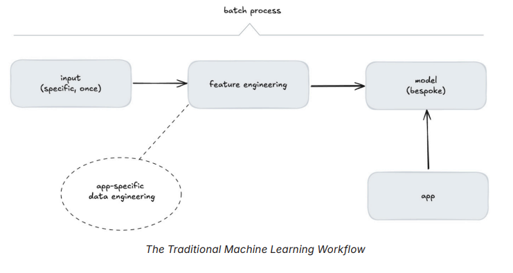
The Second Wave: Generative AI
Generative AI, driven by deep learning, marked a turning point. Instead of being confined to single domains, generative models were trained on vast, diverse datasets — giving them the ability to generalize across a variety of contexts. They could generate text, images, and even videos, opening up exciting new applications.
Whereas Predictive AI relies on batch-based statistical models to solve specific problems, Generative AI uses foundation models like LLMs that are broadly capable and reusable. The workflow shifted to: general input (once) → deep learning → reusable model, plus a continuous specific input feed → prompt assembly → app, both supported by app-specific data engineering.
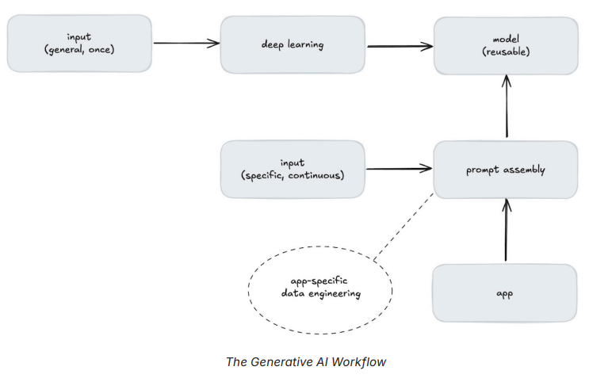
However, this wave came with its own challenges. Generative models are fixed in time — unable to incorporate new or dynamic information — and are difficult to adapt. Fine-tuning can address domain-specific needs, but it is expensive and error-prone. It requires vast data, significant computational resources, and ML expertise — making it impractical for many situations. Since LLMs are trained on publicly available data, they also lack access to domain-specific information, limiting accuracy for context-dependent questions.
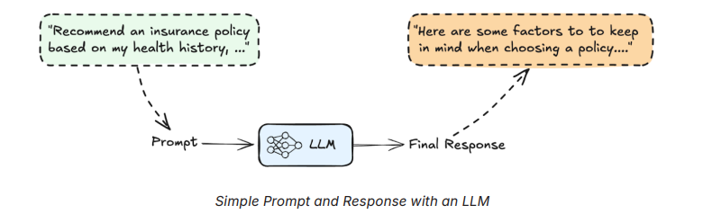
Compound AI — Bridging the Gap
To overcome these limitations, Compound AI systems integrate generative models with other components like programmatic logic, data retrieval mechanisms, and validation layers. This modular design allows AI to combine tools, fetch relevant data, and tailor outputs in a way that static models cannot.
For the insurance example, Compound AI works like this:
- A retrieval mechanism pulls the user's health and financial data from a secure database.
- This data is added to the context provided to the LLM during prompt assembly.
- The LLM uses the assembled prompt to generate an accurate response.
This process is known as Retrieval-Augmented Generation (RAG) — it bridges the gap between static AI and real-world needs by dynamically incorporating relevant data into the model's workflow.
While RAG effectively handles tasks like this, it relies on fixed workflows — every interaction and execution path must be predefined. This rigidity makes it impractical for more complex or dynamic tasks where workflows cannot be exhaustively encoded. Encoding all possible execution paths manually is labor-intensive and ultimately limiting. These limitations led to the rise of the third wave.
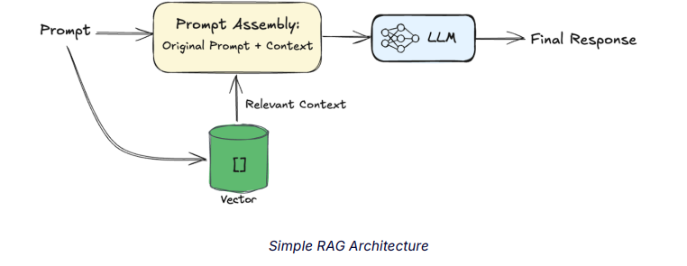
The Third Wave: Agentic AI
Agents bring something fundamentally new: dynamic, context-driven workflows. Unlike traditional AI models that follow predefined paths, agentic systems determine the best course of action on the fly, adapting in real time to the challenges they face. This makes them particularly well-suited for solving complex, interconnected problems in enterprise environments.
Agents flip traditional control logic on its head. Instead of rigid programs dictating every move, agents use LLMs to drive decisions. They can reason, use tools, and access memory — all dynamically. This flexibility allows for workflows that evolve in real time, making agents far more powerful than anything built on fixed logic.
The control logic spectrum runs from Programmatic (Fixed Flow, low autonomy) on one end to Agentic (Variable Flow, high autonomy) on the other.
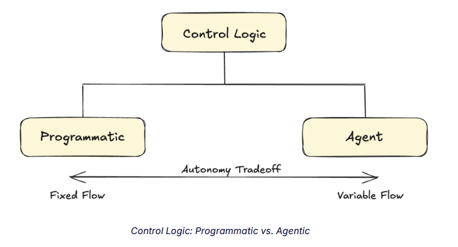
The agent architecture (inspired by the Generative Agents paper, arxiv.org/pdf/2304.03442) shows the core loop: Perceive → Memory Stream → Retrieve → Retrieved Memories → Act, with Plan at the top and Reflect at the bottom operating above and below the memory system. This foundational loop is what all modern agents implement in some form.
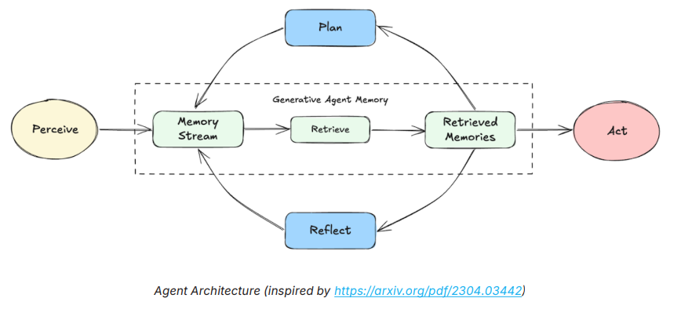
The Power of Singular Agent Systems
A single agent can be powerful when designed correctly. Effective AI agents share three key characteristics:
- Autonomy: They operate without constant human intervention.
- Adaptability: They adjust to new data and changing conditions.
- Decision-Making: They evaluate multiple options and select the best course of action.
However, traditional architectures make deploying such agents challenging. AI systems struggle with data freshness, integration complexity, security, governance, and real-time responsiveness. Many still rely on batch-based processing, leading to decisions made on stale data, while fragmented data landscapes make it difficult to establish contextualized and trustworthy data. These challenges create a "data mess" where agents lack the reliable, real-time inputs needed to make effective decisions — highlighting the need for an event-driven foundation powered by a data streaming platform.
Part II — The Anatomy of an AI Agent
In AI, agents have a long history — from early theoretical considerations by Alan Turing and John McCarthy, to rule-based reasoning agents in the 1960s. Today, the emergence of foundation models has transformed what is possible. Just like humans, agents solve problems by combining their senses, memory, reasoning, and ability to act. But before diving into these mechanics, there is one foundational element that underpins everything: their persona.
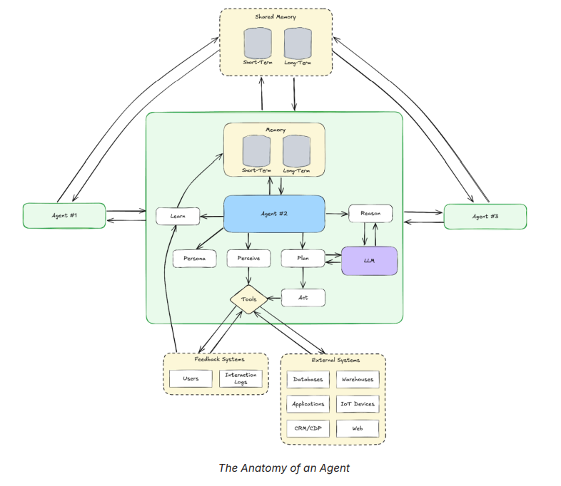
The 9 Core Components
Why Event-Driven Matters for Agents
Agents, at their core, function much like microservices — as modular, independent units that execute specific tasks. However, unlike traditional microservices, agents do not just process requests; they reason, plan, and take actions based on stateful information. Without proper coordination, this complexity can quickly spiral out of control.
Imagine deploying hundreds of microservices without guardrails — without standardized communication, state synchronization, or failure recovery mechanisms. The result would be chaos. The same applies to multi-agent systems: without a structured framework, agents become fragmented, inefficient, and unreliable.
Microservices architecture evolved to solve similar challenges by shifting from tightly coupled, request/response-based communication to event-driven design. Early monolithic applications struggled to scale because every component had direct dependencies on others. Microservices addressed this by decoupling services. But managing interservice communication through APIs still introduced bottlenecks. The breakthrough came with Event-Driven Architectures (EDA) — where services could react to changes asynchronously, enabling real-time responsiveness and scalability.
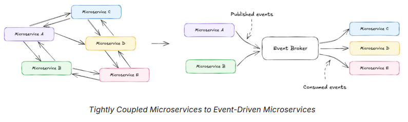
Agents need the same shift. Instead of rigid, API-driven interactions, they should operate in an event-driven ecosystem. EDA provides the necessary foundation for scalable, adaptive agents by ensuring:
- Asynchronous Processing: Agents process tasks as events arrive, avoiding bottlenecks caused by synchronous API calls.
- Scalability: New agents can join the system without disrupting existing workflows, much like adding new microservices to an event-driven infrastructure.
- Loose Coupling: Agents interact via event streams rather than direct dependencies, reducing fragility and enabling modular development.
- Real-Time Responsiveness: Agents react instantly to events, ensuring decisions are made based on the latest available data.
Just as microservices rely on message brokers like Apache Kafka® for asynchronous communication, agents leverage event streaming to collaborate without rigid dependencies. A data streaming platform takes this further — not just streaming data, but also connecting disparate data sources, processing events in motion, and enforcing governance. With a data streaming platform, agents operate on real-time, contextualized data — avoiding stale insights from batch processing.
From Singular to Multi-Agent Systems
As powerful as a single agent can be, its capabilities are inherently limited by its scope. No single agent can handle every possible task with full expertise — just as no individual worker in a company can effectively perform every job. The real promise of agentic AI lies in Multi-Agent Systems (MAS) — a network of agents that collaborate (or sometimes compete) to solve complex problems more effectively than any single agent could on its own.
Multi-agent systems are designed to distribute workloads, balance specialization, and enable decentralized decision-making. They allow:
- Task Delegation: Agents specialize in specific domains and distribute workloads efficiently.
- Parallel Processing: Agents execute tasks simultaneously without bottlenecks.
- Dynamic Role Allocation: Responsibilities shift based on changing requirements.
Traditional API-based integrations create tight coupling — agents must know exactly which other agents to interact with. This does not scale. As the number of agents grows, the complexity of interactions increases exponentially. Event-driven architecture ensures seamless coordination, enabling agents to operate as part of an adaptive, resilient ecosystem.
Part III — Design Patterns for Multi-Agent Systems
Enterprises require networks of agents that collaborate, share context, and execute workflows together. Scaling from a single agent to a multi-agent system introduces eight significant challenges:
- Context and Data Sharing: Agents must exchange information efficiently without duplication, loss, or inconsistency.
- Scalability and Fault Tolerance: Systems should handle a growing number of agents while ensuring recovery from failures.
- Integration Complexity: Agents interact with diverse tools and data sources, requiring seamless interoperability.
- Timely and Accurate Decisions: Agents need access to fresh, real-time data to make informed decisions without delay.
- Safety and Validation: Guardrails are necessary to prevent unintended behaviors and ensure reliable, high-quality outputs.
- Security and Governance: Organizations must enforce data security, compliance, and lineage to maintain trust and control.
- Operational Overhead: Managing infrastructure for data pipelines, integration, and compute at scale adds significant burden.
- Lack of Global Availability: AI systems require real-time data access and processing across regions to support global operations.
The Confluent Data Streaming Platform is the future-proof foundation for addressing these challenges — acting as the communication layer and data enabler in the agentic AI stack.
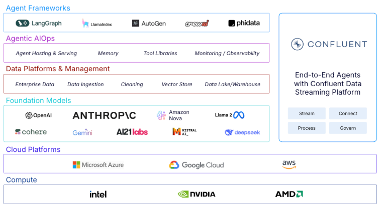
The Four Pillars of Confluent Data Streaming Platform
By combining four key pillars — Stream, Connect, Process, and Govern — Confluent enables agents to seamlessly consume, process, and act on data in motion:
The Four Multi-Agent Design Patterns
Multi-agent design patterns define how autonomous agents communicate, collaborate, or compete to solve problems. The document covers four essential patterns and how event-driven architectures transform each into a scalable, loosely coupled system.
A central Orchestrator agent assigns tasks to worker agents and manages execution — akin to the Master-Worker pattern in distributed computing, where an orchestrator coordinates multiple independent workers that execute specific jobs.
Traditional Approach:
- The orchestrator assigns tasks to worker agents.
- Workers execute tasks and return results to the orchestrator.
- If a worker fails, the orchestrator must reassign tasks manually.
Event-Driven Approach: The orchestrator uses key-based Kafka partitioning strategies — using keys to distribute command messages across partitions in a single Orchestration Topic. Worker agents act as a consumer group, pulling events from one or more assigned partitions. Each worker agent sends output messages into a Response Topic where downstream systems consume them. For events that should be processed by the same stateful worker agent as a previous message, the same key is used for each event in a sequence. The Kafka Consumer Rebalance Protocol ensures each worker gets similar workloads — even as workers are added or removed. On worker failure, the log can be replayed from a saved partition offset. The orchestrator no longer needs bespoke failure logic — it simply specifies work and distributes it with a sensible keying strategy.
Result: Dynamic scaling, automatic fault recovery, and efficient workload distribution without complex management logic.
When to use: Structured, predictable workflows where task decomposition is well understood — document processing pipelines, code review, customer query routing.
Avoid when: Task decomposition is unknown upfront.
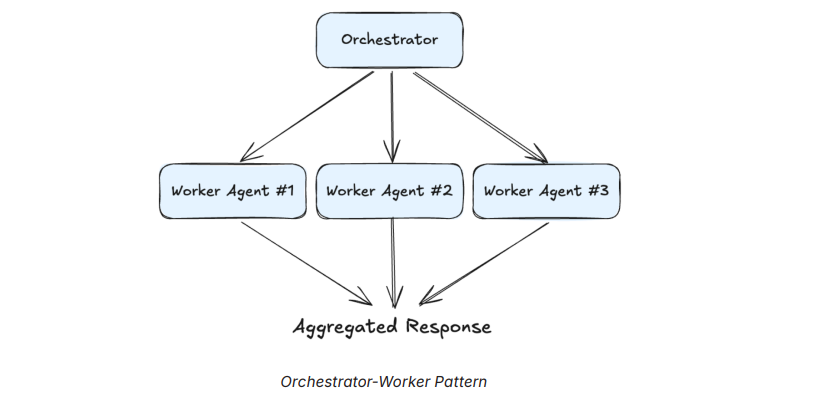
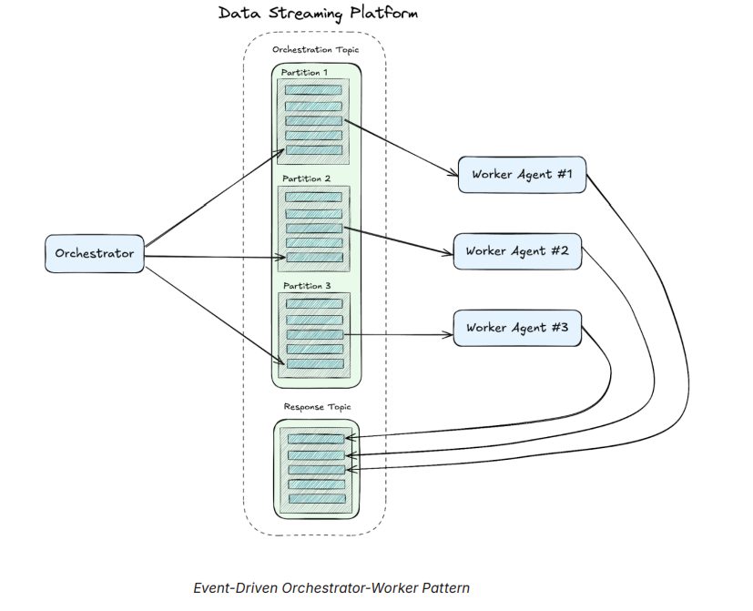
Organizes agents into layers where higher-level agents oversee or delegate tasks to lower-level agents — ideal for breaking down complex problems into smaller, manageable parts.
Traditional Approach:
- A central decision-making agent controls multiple subordinate agents.
- Subordinate agents handle specialized tasks but require direct coordination.
Event-Driven Approach: Apply the orchestrator-worker technique recursively in the agent hierarchy — each non-leaf node acts as the orchestrator for its respective subtree. Higher-level agents publish objectives as events. Mid-tier agents consume events, break down tasks, and issue new events to lower-tier agents. Execution (leaf) agents consume low-level tasks, process them, and publish results. Sibling agents form consumer groups to process shared workloads dynamically. Hierarchy is no longer rigid — agents can be added or removed dynamically without modifying the system's core logic.
When to use: Large-scale enterprise systems where different sub-domains have their own expertise — company-wide AI assistant routing to HR, Finance, Engineering, Legal sub-agents, each with their own specialist workers.
Avoid when: Low-latency or simple tasks where deep call chains add unnecessary overhead.
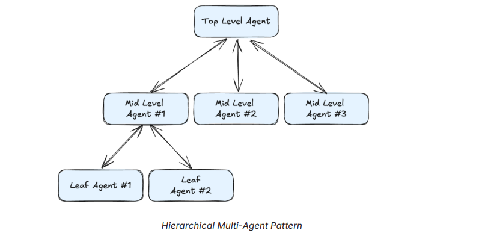
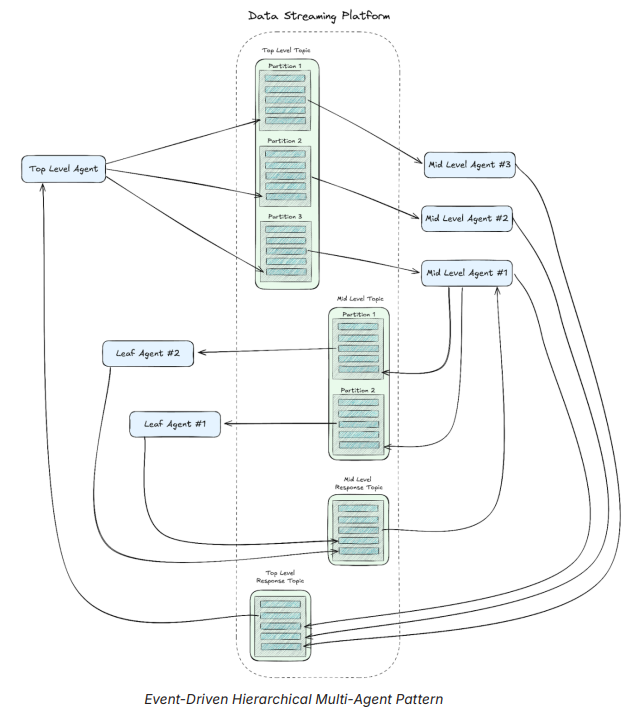
Introduces a shared knowledge base — a "blackboard" — where agents asynchronously post and retrieve information. Widely used in complex problem-solving such as collaborative AI systems and robotics.
Traditional Approach:
- Agents must explicitly query a database or communicate directly with other agents.
- Coordination becomes a bottleneck, leading to synchronization challenges.
Event-Driven Approach: The blackboard is implemented as a streaming topic in Kafka. Agents publish knowledge updates as events instead of direct database writes. Other agents subscribe to these updates dynamically, consuming only relevant information. The blackboard acts as a memory layer — ensuring that shared context is always available without excessive network calls. Real-time collaboration without agents needing to track each other's state explicitly.
When to use: Problems where no single agent has complete knowledge and the best solution emerges iteratively — scientific hypothesis generation, collaborative document drafting, complex debugging.
Avoid when: Strict ordering or consistency is required.
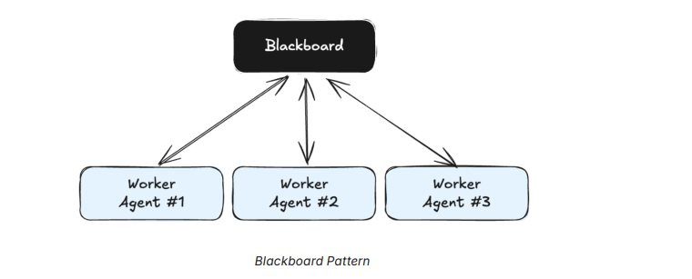
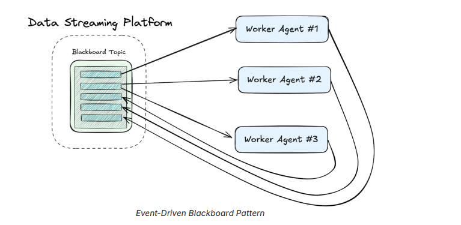
Models a decentralized system where agents negotiate or compete for tasks and resources. Commonly used in autonomous trading, logistics, and distributed optimization problems.
Traditional Approach:
- Agents communicate directly with each other to place bids or negotiate terms.
- A central system is often required to coordinate interactions.
Event-Driven Approach: Bidding agents publish offers and requests as events. A market-making service matches events, executing transactions asynchronously. Agents listen for matched events and adjust their strategies dynamically. This removes the quadratic complexity of direct peer-to-peer communication — agents interact through a central event log instead of maintaining individual connections. Example: in financial markets, a data streaming platform acts as a real-time event broker, allowing thousands of trading agents to execute bids, match orders, and react to price fluctuations in milliseconds.
When to use: Dynamic workloads where the right agent depends on current conditions — cloud resource allocation, distributed rendering, content moderation at scale, logistics optimization.
Avoid when: Predictable, low-volume tasks where bidding overhead outweighs benefits.
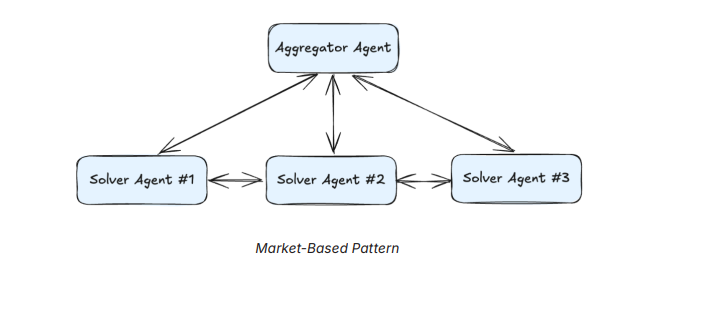
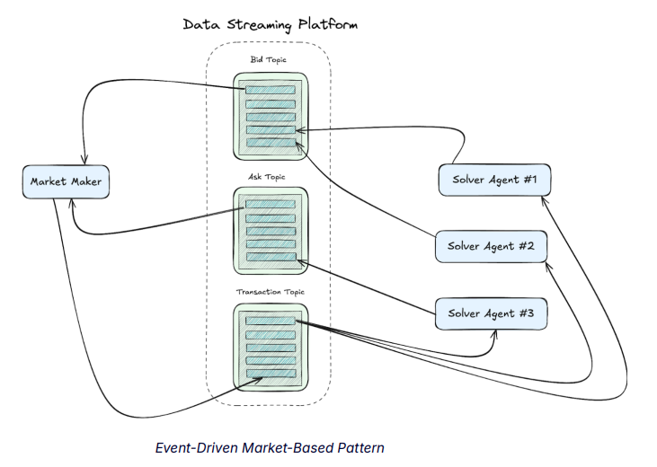
Pattern Selection Guide
| Pattern | Control Model | Best For | Avoid When |
|---|---|---|---|
| Orchestrator-Worker | Centralized | Known, structured pipelines | Task decomposition unknown upfront |
| Hierarchical | Multi-level | Large enterprise with sub-domains | Low-latency or simple tasks |
| Blackboard | Decentralized | Emergent, collaborative problems | Strict ordering or consistency required |
| Market-Based | Self-organizing | Dynamic, variable workloads | Predictable, low-volume tasks |
Real-World Example: Multi-Agent AI Sales Development Representative (SDR)
An event-driven, multi-agent system that automates the SDR (Sales Development Representative) workflow. Apache Flink® with AI Model Inference is used to orchestrate communication with a series of AI agents.
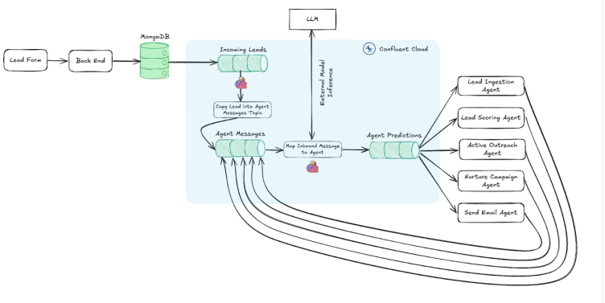
The system consists of the following five agents:
- Lead Ingestion Agent: Captures incoming leads from web forms, enriches them with external data (e.g., company website, Salesforce), and generates a report that can be used for scoring.
- Lead Scoring Agent: Uses enriched lead information to score leads and generate a short summary for how to best engage. Determines the appropriate next step and triggers downstream agents.
- Active Outreach Agent: Creates personalized outreach emails, incorporating insights from the lead's online presence, in order to book a meeting.
- Nurture Campaign Agent: Dynamically creates a sequence of emails based on where the lead originated and what their interest was.
- Send Email Agent: Currently sends to a terminal, but in a real application would send via email relay or email service.
The Role of the Data Streaming Platform in Multi-Agent Systems
For multi-agent systems to function efficiently, they must operate under a shared event-driven model that standardizes communication and decision-making. This model has three primary components:
- Input: Agents consume structured events or commands.
- Processing: Agents apply reasoning, use tools, or retrieve additional context.
- Output: Agents produce new events or take actions in external systems.
Maintaining state consistency across multiple agents requires event persistence and replayability. Every event is recorded as an immutable entry (no data loss). If an agent fails, it can replay events from a saved offset, restoring its state seamlessly. Multiple agents can consume the same event stream, allowing parallel processing without interference.
Part IV — Building Event-Driven Systems for Agents
AI agents are only as effective as the infrastructure that supports them. No matter how sophisticated an agent's reasoning and decision-making capabilities are, they depend on access to the right data, tools, and communication channels. Traditional architectures — built around request/response patterns, rigid APIs, and batch data processing — create bottlenecks that limit an agent's ability to act in real time.
EDAs solve this by treating data as a continuously moving asset, rather than a static snapshot. Using the Confluent Data Streaming Platform as the backbone, agents can consume, process, and emit events asynchronously — making them adaptable, scalable, and resilient for enterprise use cases.
Architecting Singular and Multi-Agent Systems
Instead of waiting for direct instructions, agents are designed to emit and listen for events autonomously. Events act as signals that something has happened — a change in data, a triggered action, or an important update — allowing agents to respond dynamically and independently.
At their core, AI agents function much like microservices — operating autonomously but needing structured communication to collaborate effectively. The Confluent Data Streaming Platform acts as the "central nervous system" for agents, enabling them to function in a loosely coupled but highly coordinated manner.
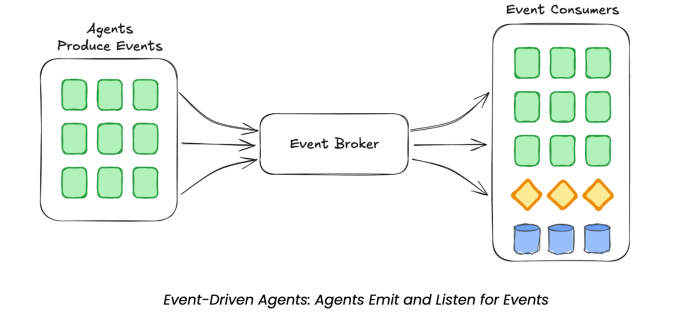
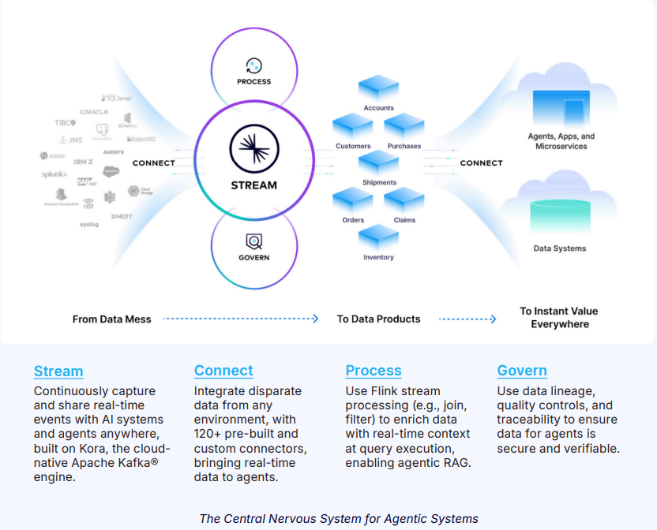
By integrating Apache Kafka®, Apache Flink®, and an agent framework like LangGraph, we can build architectures that scale horizontally, process high-throughput data streams, and ensure real-time responsiveness. What the platform provides:
- Horizontal Scalability: Agents operate independently — adding more agents does not require rewriting the entire system.
- Low Latency and High Throughput: Streaming platforms ensure agents receive and act on fresh data without waiting for batch updates.
- Fault Recovery and Isolation: Failures in one part of the system do not bring down the entire workflow. Agents replay events from logs, ensuring resilience.
- Shift Left: Data is processed closer to the source, reducing latency and improving AI performance.
Challenges and Solutions in Event-Driven Agent Design
[Stream] Next-Level Data Streaming with a Fully Managed, Cloud-Native Service
In an agent-driven system, failures — from network issues, hardware faults, or software crashes — are inevitable. The challenge is ensuring agents can recover seamlessly without disrupting workflows.
Solution: Kafka's log-based architecture (on Kora) enables agents to replay events and recover from failures. Idempotent processing ensures retried operations do not result in duplicate actions. Dead-letter queues handle failure scenarios gracefully, allowing human oversight when needed.
[Connect] Seamless Integration: Connecting Agents with Diverse Systems
AI agents often interact with multiple external systems — databases, APIs, vector stores, and enterprise applications. These interactions require seamless, low-latency connectivity without introducing unnecessary dependencies.
Solution: Use connectors to integrate disparate data sources and event streams — allowing agents to consume and produce events without hardcoded dependencies. Leverage LangGraph, Microsoft AutoGen, CrewAI, and similar frameworks for tool integration, enabling agents to call APIs, databases, and models dynamically. Use Kafka topics and Flink stream processing for structured collaboration between different AI agents.
[Process] Ensuring Data Freshness: Handling Dynamic Data Streams
Agents require up-to-date, real-time data for optimal decision-making. Traditional architectures that rely on static data retrieval lead to outdated responses and inefficient workflows.
Solution: Use Flink SQL and Table API to process incoming data streams, ensuring AI models and agents work with the latest context. Flink AI Model Inference ensures model predictions update dynamically as new data flows in. Embedding pipelines transform unstructured text into vector representations in real time, stored in vector databases (e.g., MongoDB) for rapid retrieval in RAG.
[Govern] Data Quality, Security, and Compliance
AI agents often interact with sensitive data, requiring strong governance, auditing, and compliance measures.
Solution: Stream Governance ensures clean, structured data flows through the system, enforcing policies and data lineage tracking. Encryption and access control at the field level prevent unauthorized data exposure. Fine-grained retention policies ensure data is handled in compliance with regulatory requirements like GDPR.
Real-World Example: Agentic RAG
An event-driven research agent that mines source materials and leverages RAG to create a podcast interview brief.
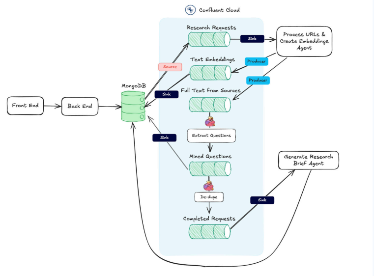
The workflow:
- Stream unstructured data (e.g., website URLs, blogs, podcasts) into Confluent, retrieve the text, chunk it, generate embeddings using Flink, and store them in a vector database like MongoDB Atlas using a sink connector.
- For all text extracted, pull out the most interesting questions and store those.
- Call the LLM to generate a research brief combining the most relevant context based on the embeddings.
Part V — Real-World Applications
Event-driven architectures unlock powerful AI applications across industries by ensuring agents operate with fresh, real-time data. Below are three companies using a data streaming platform to build event-driven multi-agent systems.
1. Automating Web Scraping with AI Agents — Reworkd
Traditional web scraping is brittle — requiring manual efforts to handle dynamic pages, extract relevant data, and adapt to site changes. This complexity increases when supporting GenAI models that need structured and unstructured data in real time. Static scraping workflows fail to keep up, leading to outdated or incomplete information.
Reworkd tackled this by building an agentic system for web scraping. AI agents write code to extract relevant data, while test and validation agents verify that the generated code is correct. These agents operate asynchronously, consuming and producing events in a continuous feedback loop. The result: a scalable, fault-tolerant system that dynamically adjusts to website changes and ensures high-quality data feeds for AI models.
2. Intelligent Business Copilots — Airy
Teams need self-serve, real-time access to data for faster, smarter decision-making. Yet business stakeholders often rely on engineering and data science teams to integrate and query data, introducing bottlenecks, batch-based delays, and stale insights.
Airy transforms this by enabling AI-powered copilots that provide a natural language interface for exploring and working with real-time data. Agents convert plain language into Flink jobs, continuously monitoring and processing data streams. By leveraging real-time context from a data streaming platform, these agents use LLMs to generate precise Flink SQL queries — empowering teams to extract and analyze live data instantly. This shifts data interaction from manual queries to conversational, real-time insights.
3. Workflow Automation with a Drag-and-Drop Agent Builder — Agent Taskflow
When starting to build multi-agent systems, teams face the complexity of integrating and orchestrating AI agents and tools, as well as managing intricate tasks at scale.
Agent Taskflow provides a no-code platform that helps users get up and running with all the features that go into an agent — memory, knowledge bases, and tools — in just a few clicks. The drag-and-drop UI allows effortless creation of workflows. Built on a data streaming platform, the solution enables agents to make context-informed decisions and adapt to real-time events for more efficient and intelligent automation. From automating customer support to marketing campaigns, this frees teams to focus on high-value work while democratizing AI agents for users without programming expertise.
Broader Industry Impact
Event-driven AI agents enable businesses to automate complex, real-time tasks across industries:
- E-commerce: Agents continuously track price changes, product availability, and competitor trends — ensuring businesses make informed pricing decisions.
- Market Research: Streaming data feeds allow companies to monitor customer sentiment, competitive shifts, and industry trends in real time.
- Finance: Agents aggregate financial data, news sentiment, and stock movements — helping analysts make more accurate, timely decisions.
Why a Data Streaming Platform is Essential for AI Agents
At the heart of every scalable agentic system is a real-time data streaming platform. Unlike traditional request/response architectures that introduce bottlenecks and stale data, streaming enables continuous, low-latency access to the information agents need. Why streaming matters:
- Real-Time Access: Eliminates batch delays and ensures agents make decisions based on the latest available data.
- Decoupled Architecture: Agents interact through event streams rather than direct calls, reducing complexity and interdependencies.
- AI-Ready Data: Streaming platforms transform unstructured data into embeddings stored in vector stores like MongoDB, making it AI-friendly.
- Scalable AI Interactions: AI workloads are distributed across streaming pipelines, preventing bottlenecks and improving efficiency.
- Modular and Future-Proof: Use any model, vector database, or AI framework of choice, with flexibility to swap in new technologies as they evolve — ensuring long-term adaptability.
The Future of AI is Event-Driven
AI-powered agents will define the next era of automation, but only if they can think, act, and collaborate in real time. Event-driven architectures ensure that agents are no longer limited by outdated batch processes, rigid APIs, or stale data. Instead, they operate dynamically — processing, analyzing, and acting on real-time events as they happen.
As AI adoption accelerates, companies that embrace streaming-first architectures will have a massive advantage. They will build AI systems that are smarter, more adaptable, and infinitely scalable — unlocking true agentic intelligence across industries.
By adopting a shift-left approach — moving computation closer to the data source — organizations can reduce latency, improve AI performance, and create a more adaptive architecture that is built not just for today, but for long-term scalability and adaptability.
Apache Kafka — Core Concepts for Agent Coordination
The document uses Apache Kafka (via Confluent's cloud-native Kora engine) as the reference event streaming platform. Kafka is the de facto standard for high-throughput, fault-tolerant event streaming in production AI systems.
Key Kafka Concepts
Sample Agent Event Structure
Why EDA vs. REST — Comparison Table
| Agent Requirement | Problem with REST | EDA Solution |
|---|---|---|
| LLM inference is slow (seconds to minutes) | Caller must wait, holding a connection open | Fire-and-forget event; caller gets result via event when ready |
| Multiple agents need shared context | Each pair needs its own API contract | Shared event stream acts as common "working memory" |
| Scale agent instances up/down independently | Tight coupling makes independent scaling hard | Producers/consumers scale independently based on queue depth |
| Full audit trail of decisions | REST logs don't capture causality chains | Event log captures every action, input, and output in sequence |
| Fault tolerance — agents can crash | In-progress request is lost if agent restarts | Events are persisted; agent resumes from last committed offset |
| Fan-out — one task triggers many agents | Caller must manage multiple parallel calls | One event can be consumed by N agents independently |